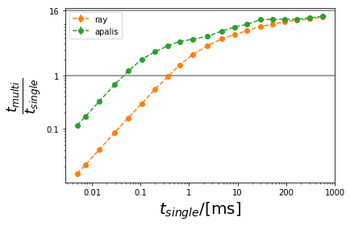

What is Apalis?¶
Apalis is a python library for parallel computing. It focuses on enabling parallel computing with little overhead. In Apalis vs Ray we compare Apalis to ray in speed.
Getting started with Apalis¶
Apalis can be installed from PyPI:
pip install apalis
Apalis can send an object into a child process and interact with it through a Handler. To send an object into a parallel process just:
import apalis
import time
class A:
def expensive(self, x):
time.sleep(1)
return x
a = A()
obj = apalis.Handler(a) # Sends the object to a child process.
token = obj.expensive(5) # Sends the task to the object in the child process.
token() # Calling the token yields the result of the operation.
The same can be done with multiple Handlers at once.
es = [apalis.Handler(A()) for _ in range(16)]
tokens = [obj.expensive(5) for obj in objs]
aplais.get(tokens) # Gets the results of the operations.
More examples can be found in this Jupyter Notebook.
Apalis vs Ray¶
Ray is the go-to option for parallel computing in python. It has a lot of functionality build in which makes it a good choice for a variety of projects. The problem is that the functionality comes at the cost of a lot of overhead. This is especially noticeable when parallelizing tasks that take less than 1ms to complete.
In the figure bellow different tasks that take time are parallelized by both Apalis and Ray on a 16 core CPU. The speedup from both methods is plotted against how expensive the task was, to begin with. Apalis is faster than single-threaded for tasks that are slower than 0.04ms while Ray is only better than single-threaded starting from 0.4ms. Note that the longer the task takes the closer to 16 times improvement we come.
The code to generate the image above can be found in this Jupyter Notebook.